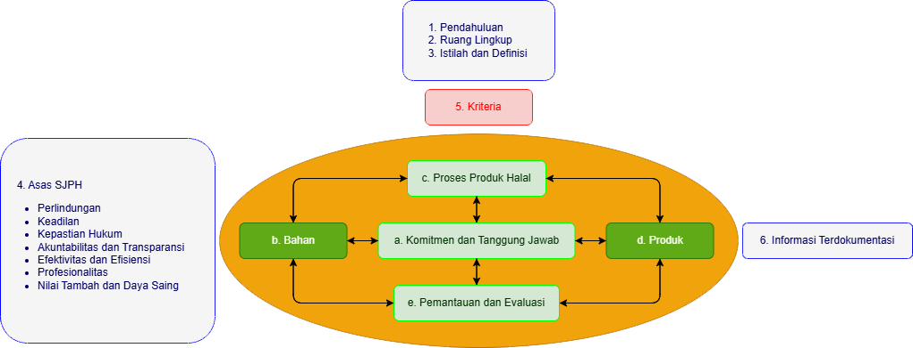

PRODUK & BAHAN


Lima kerangka prinsip dasar (arkan al-halal)
Berdasarkan Keputusan Kepala BPJPH Nomor 150 Tahun 2022
Unsur yang digunakan untuk membuat atau menghasilkan produk yang dipersyaratkan dalam SJPH.
Bahan Baku & Bahan Tambahan
Digunakan dalam pembuatan produk & menjadi bagian dari komposisi produk (ingredient).
Bahan Penolong
Digunakan untuk membantu proses produksi, tetapi tidak menjadi bagian dari komposisi.
Contoh: enzim, pelarut, air untuk mencuci peralatan, kuas untuk mengoles.
Bahan yang digunakan sudah dipastikan kehalalannya.
Tidak menggunakan bahan berbahaya.
Keputusan Kepala BPJPH Nomor 150 Tahun 2022
Bahan Tidak Diragukan
Bahan yang tidak kritis dari aspek halal sehingga tidak harus dilengkapi dengan Sertifikat Halal. Kategori bahan tidak diragukan diatur dalam KMA Nomor 1360 tahun 2021.
Bahan Diragukan
“Dan makanlah dari apa yang telah diberikan Allah kepadamu sebagai rezeki yang halal dan baik, dan bertakwalah kepada Allah yang kamu beriman kepada-Nya”.
(QS. Al-Maidah : 88)
Nomor 11 Tahun 2009
Nomor 12 Tahun 2009
Nomor 01 Tahun 2010
Nomor 02 Tahun 2010
Nomor 07 Tahun 2010
Nomor 10 Tahun 2011
Nomor 25 Tahun 2012